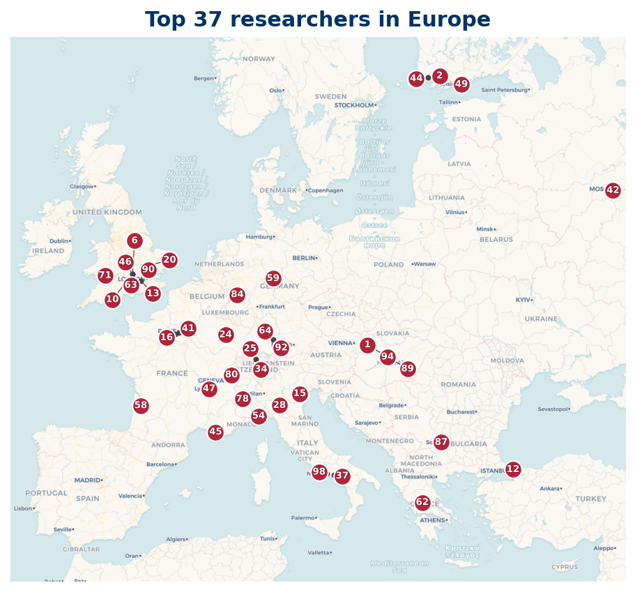

Europe
Top 100 researchers based in Europe
35 of the Top 100 researchers are based in Europe.

Listing
| Rank | Name | Institution | Country |
|---|---|---|---|
| 1 | Janos Pintz | Alfred Renyi Institute of Mathematics | HU |
| 2 | Kaisa Matomäki | University of Turku | FI |
| 6 | Joni Teräväinen | University of Turku | FI |
| 7 | A. Languasco | University of Padua | IT |
| 8 | Giovanni Coppola | University of Salerno | IT |
| 11 | A. Zaccagnini | University of Parma | IT |
| 12 | Marek Wolf | Cardinal Stefan Wyszynski University | PL |
| 15 | James Maynard | University of Oxford | GB |
| 18 | Jori Merikoski | University of Turku | FI |
| 19 | Ofir Gorodetsky | University of Oxford | GB |
| 20 | C. Y. Yildirim | Bogazici University | TR |
| 21 | Sergei Konyagin | Steklov Mathematical Institute | RU |
| 24 | J. P. Keating | University of Oxford | GB |
| 25 | Vivian Kuperberg | ETH Zurich | CH |
| 39 | Jie Wu | Centre National de la Recherche Scientifique | FR |
| 40 | Alexander P. Mangerel | Durham University | GB |
| 47 | Ben Green | University of Oxford | GB |
| 50 | Johan Andersson | Orebro University | SE |
| 52 | Louis-Pierre Arguin | University of Oxford | GB |
| 57 | Michael Th. Rassias | University of Glasgow | GB |
| 68 | Loïc Grenié | University of Bergamo | IT |
| 69 | Giuseppe Molteni | University of Milan | IT |
| 74 | Maurizio Laporta | University of Naples Federico II | IT |
| 78 | Jörn Steuding | University of Würzburg | DE |
| 79 | Pieter Moree | Max Planck Institute for Mathematics | DE |
| 81 | Lola Thompson | Utrecht University | NL |
| 82 | H. M. Bui | University of Exeter | GB |
| 83 | Edva Roditty-Gershon | University of Bristol | GB |
| 86 | D. R. Heath-Brown | University of Oxford | GB |
| 87 | El Houcein El Abdalaoui | Centre National de la Recherche Scientifique | FR |
| 88 | Oleksiy Klurman | University of Bristol | GB |
| 90 | Lasse Grimmelt | University of Oxford | GB |
| 93 | Antal Balog | Alfred Renyi Institute of Mathematics | HU |
| 94 | Jacques Benatar | University of Helsinki | FI |
| 95 | Daniele Mastrostefano | University of Warwick | GB |